I'm Mohamed Aziz Chebil
A Coder, Innovator and MUNer

About Me
I am Mohamed Aziz Chebil from Tunisia. I graduated from Hammam Lif
Pioneer High School with highest honors and currently on a gap year
before college.
I like to code, debate in Model UN conferences, read non-fiction
books, and go for long walks in nature.
I also enjoy listening to rappers like EMINEM & NF.
Here are some things about me :
Favorite School Subject : Math
Rapper
: NF
Book
: Getting Things Done by David Allen
Scientist
: Richard Feynman
UN
committee : UNESCO
Can
code in : Python/Qiskit, C++, Java, HTML, CSS, JS/React & Flutter.
Model UN
Model UN constitute a big part of my life. I did my first MUN
conference in the pandemic, I remember how shy and hesitant I was.
Yet, the idea of representing a country and speaking on behalf of a
whole nation somehow impressioned me. Thus, I attended more and more
MUN conferences online during the pandemic. Each conference brought
new people, new ideas, and new perspectives for me. The more I
participated in simulations, the more I became self-confident in my
speeches, the more I learned how to convince my fellow delegates, the
better I wrote positions and resolutions papers and the more awards I
started to win.
Simply, MUN makes me happy.
Below you find the position papers I wrote as a delegate and the study guides I wrote as a chairmanship.
Position Paper Denmark UNESCO
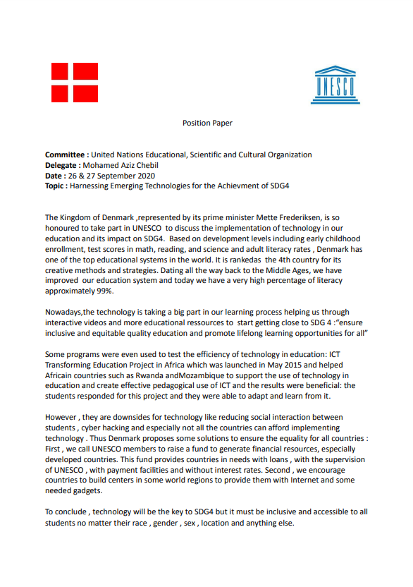Read The Full Position Paper Click Here
Position Paper France UNESCO
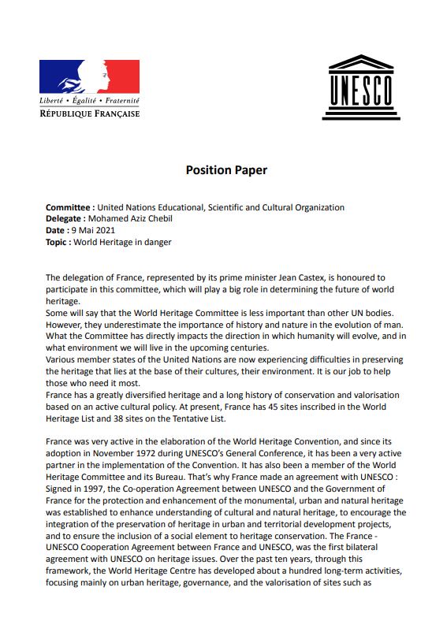Read The Full Position Paper Click Here
Position Paper Egypt ECOSOC
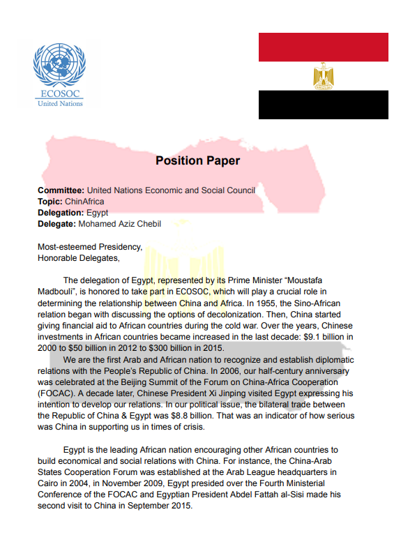Read The Full Position Paper Click Here
Position Paper Egypt UNEP
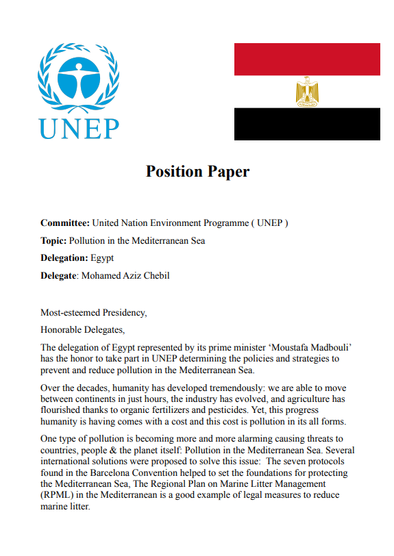Read The Full Position Paper Click Here
Position Paper The Portuguese Republic European Parliament
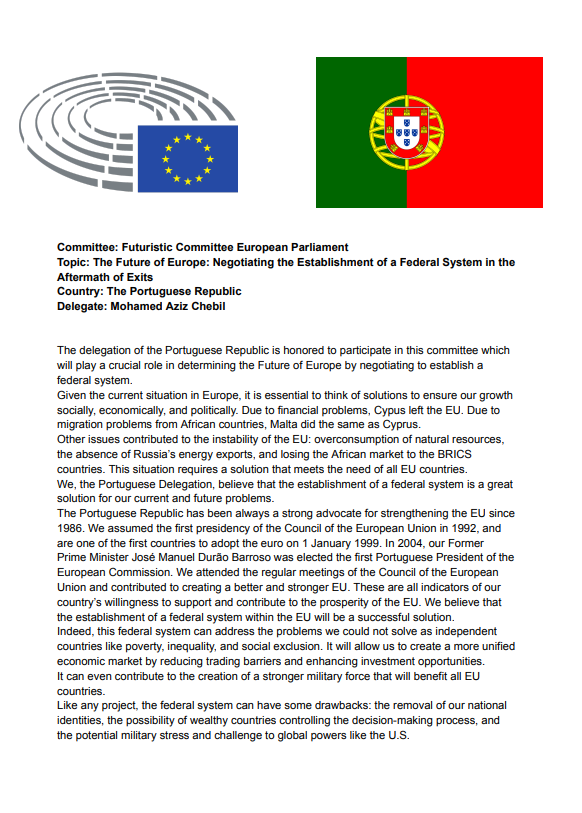Read The Full Position Paper Click Here
Study Guide UNEA
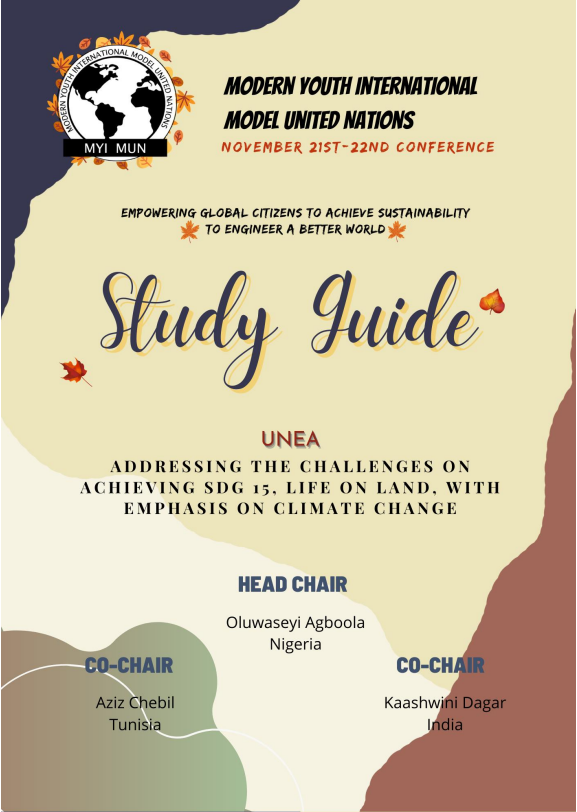Wrote an 18-page research paper “Addressing the Challenges on achieving SDG 15, Life on Land, with Emphasis on Climate Change” as a study guide for UNEA committee.
Read The Full Study Guide Click Here
Study Guide WHO
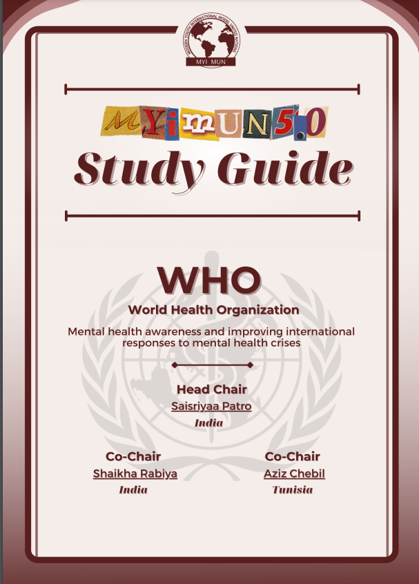Wrote an 11-page research paper "Mental Health Awarness and improving international responses to mental health crises" as a study guide for WHO committee
Read The Full Study Guide Click Here
Projects
Driven by my passion for technology, I competed in STEM competitions & built several projects you can find them below.
Quantum For Everyone
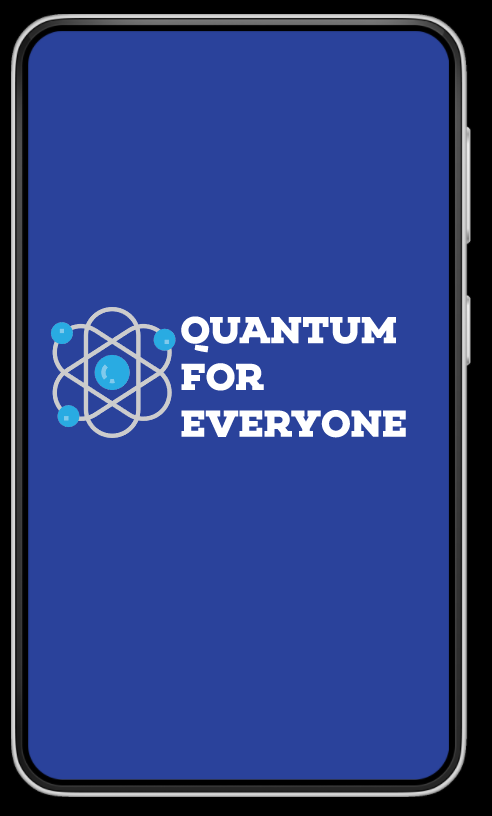Quantum For Everyone is an educational mobile app about quantum computing.Information in the app include : quantum mechanics, qubits, quantum gates & circuits, quantum algorithms & protocols.
I have competed with this project representing my country Tunisia in the one of largest science fair in the world: International Festival of Engineering, Science & Technology 14th Edition which took place in Mahdia, Tunisia 16-22 March 2023. I have competed with 1000+ participants from 40 countries and 400+ projects. I have received a silver medal.
Official Competition Abstract : Click Here
Download the mobile app on Google Play Store : Click Here
Be Better
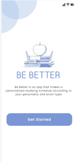Be Better is an app that makes a personalized studying schedule according to your personality and brain types using AI.
This project received the 2nd Place International Women Hackathon Tunisia 2023 where my team & I Pitched in front of a group of judges consisting of PhD graduates at Standford & Télécom ParisTech, and Research scientists at InstaDeep.
Watch our App Demo on Youtube Click Here
Quantum Machine Learning Model for Binary Classification
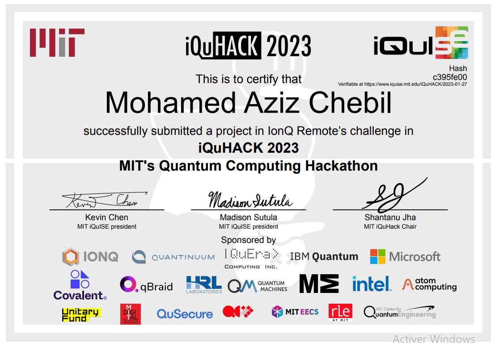Participated in one of the largest online quantum computing hackaton held by MIT; Worked with a group of 4 students from India (3 under, 1 grad) to solve IonQ remote challegen : Built a quantum machine learning model for binary image classification ( 87,7% accuracy).
GitHub Project RepositoryResearch Paper @Pioneer Academics
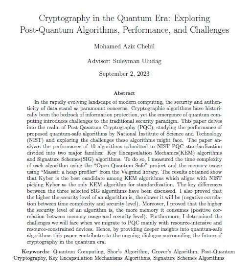
Supervised by Prof. Uludag from UoMichigan in Pioneer Academics
program, I wrote a 26-research paper about Post-Quantum
Cryptography (PQC) conducting a performance analysis of National
Institute of Standards & Technology PQC algorithms.
Read the abstract
Front-End Intern @Lentura L.L.C
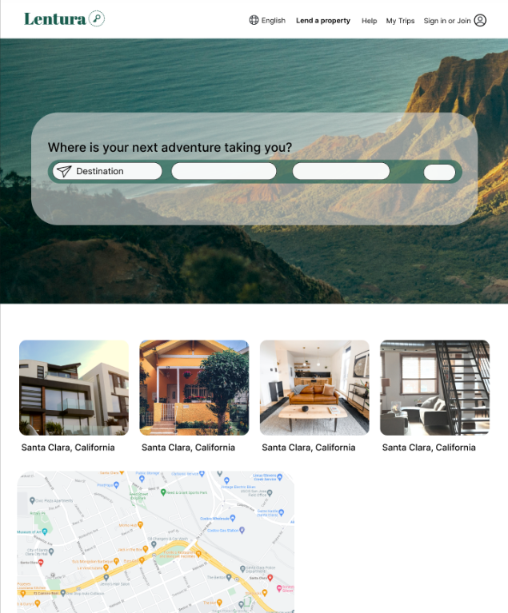In 12th grade, I interned in Lentura L.L.C , a start-up based in the U.S. Selected among 7 interns out of 200 applicants, I Developed the front-end of a platform for home rentals using HTML, CSS & JS/React. I also added 4 languages to the platform : English, French, Chinese & German.
GitHub RepositoryIBM Quantum Challenge Spring 2023
I compeleted IBM Quantum Challenge Spring 2023 where I Scored 5 out of 5 solving problems related to Dynamic Circuits, Quantum Teleportation, Quantum Error Correction, Iterative Phase Estimation, and 127 Q System. In the final lab, I worked with IBM 127 qubit device to create a 54-qubits GHZ state reducing the error rate as much as I could.
IBM Official BadgeUsing Quantum Machine Learning to Predict Drug Efficiency
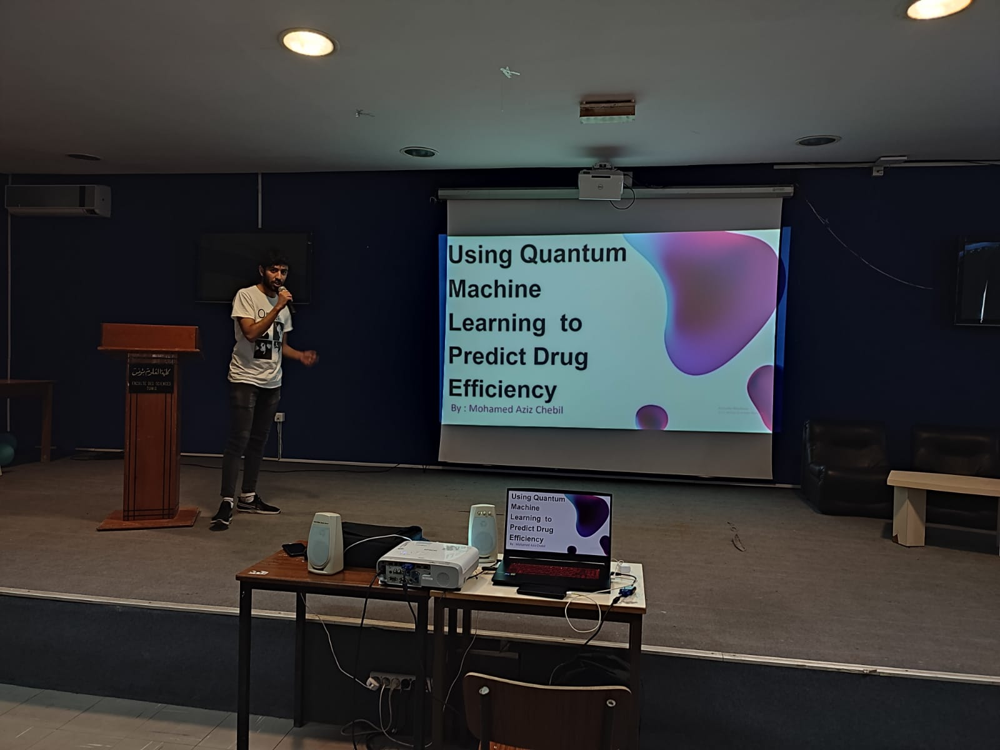
I developed a Quantum Machine Learning model to predict drug
efficiency : 2-qubit variational quantum classifier in Qiskit.
Pitched this project in the National Quantum Computing
Hackathon in front of renowned professors at the Faculty of
Sciences in Tunis and researchers at “Institut Pasteur de
Tunis”. Received the 2nd Place.
Intern @QWorld
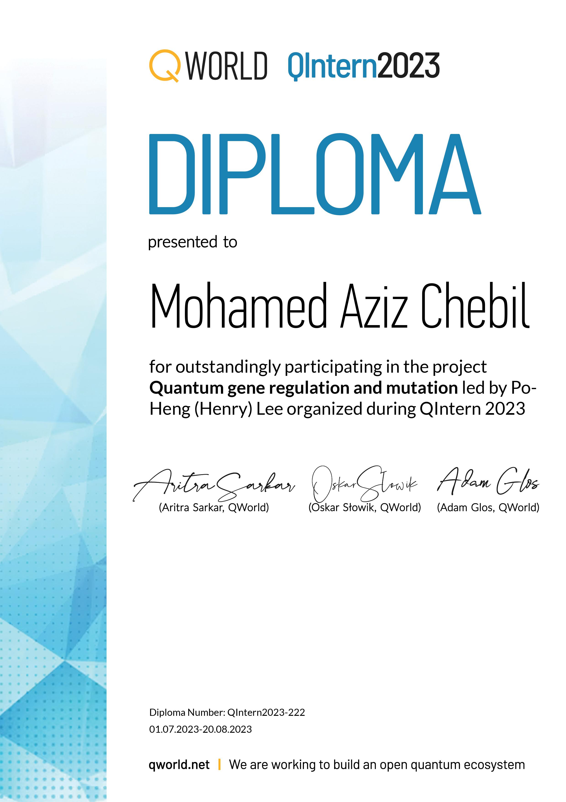Simulated Brain, Eye, and Hand coordination using a paramatized quantum circuit; Explored the intersection of non-unitary transformation and quantum gene regulation and mutation.
GitHub Project RepositoryAwards & Honors
Community
Founder @Quantum In Africa
Quantum In Africa aims to empower African students in quantum computing. So far, I led workshops to more than 300 students across 3 countries : Lesotho, Ghana & Tunisia. Our work received a certificate of Recognition by Miccrosoft Learn Student Ambassador
Certificate of Recognition by Microsoft Learn Student Ambassador
Lead Content Creator, Ambassador of Tunisia @Girls In Quantumn (GiQ)
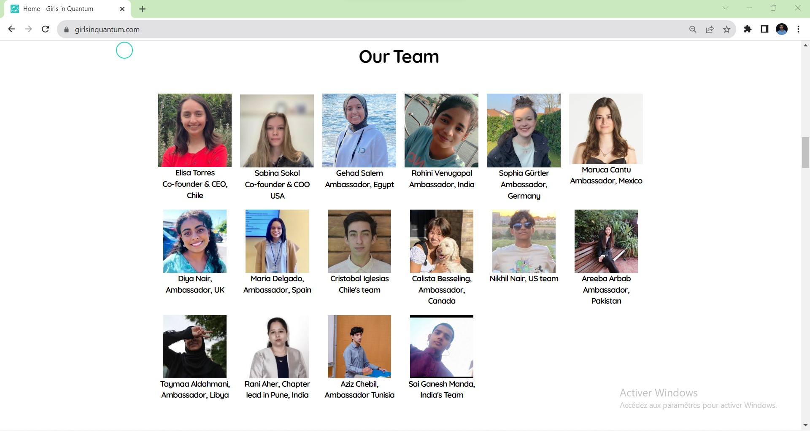
As a Lead Content Creator, I created an educational blog about
quantum computing that reached 10k+ readings a month. Articles
included Schrödinger’s Equation, Wave-Particle Duality,
Classicial vs Quantum Cryptography and more.
As the
Ambassador of Tunisia, I work on sharing GiQ learning
opportunities with girls and students in my community.
Advisory Board @Pioneer Academics
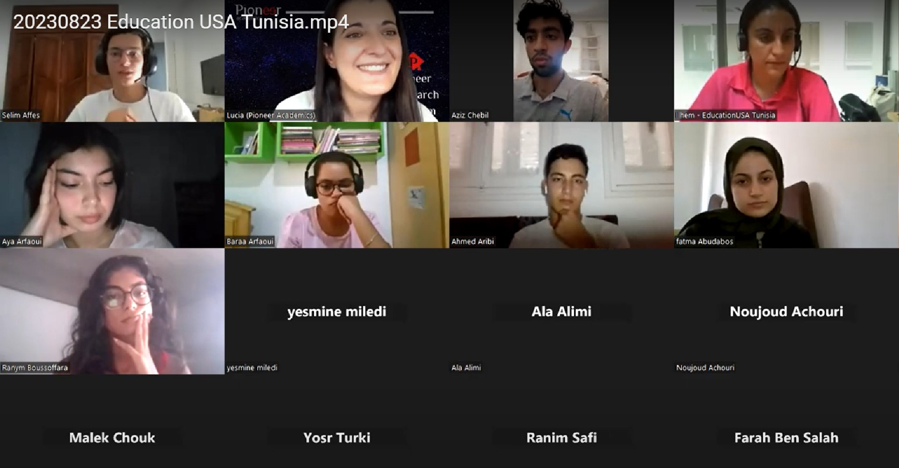After conducting research in this program, I joined the Advisory Board to make the Pioneer Scholar experience more enriching by organizing Research Workshops, Faculty Fireside Chats,and more. My tasks include organizing the first National info session about Pioneer for Tunisian high schoolers in collab w/ Education USA,preparing social media,and leading alumni scholar research workshops.
Web Development Course Facilitator

Star Girls Africa is a student-run initiative focused on creating an inclusive community where young African girls feel empowered, inspired, and confident to become future leaders in STEAM (Science, Technology, Arts & Mathematics). As part of the organization, I facilitated a 3-week online course on "Web Development" .
Chairmanship in Modern Youth International Model United Nations (MYIMUN)
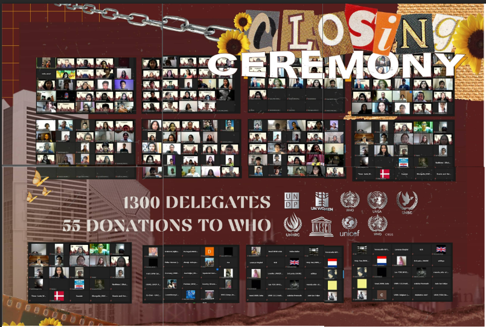MYI-MUN is an organization with an initiative that was started to provide young leaders with a platform to engage in high-quality debate about relevant world issues. We are an international free conference with the most honorable members of the Secretariat and Organizing Committee, we, at MYI-MUN work for a noble cause.
Official Instagram PageOrganizing Committee of MUNsique : TIMUN Ezzahra Grand Simulation 1.0
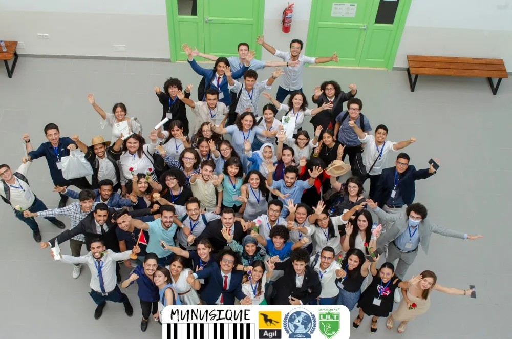MUNsique was TIMUN's Ezzahra first grand simulation with 4 committees : WHO, UNOOSA, ICJ & national committee ~100 delegates attended. The conference aimed to introduce students to diplomacy, international affairs, and politics.
Event LinkOrganizing Committee of MUNstellar : TIMUN's Ezzahra Grand Simulation 2.0
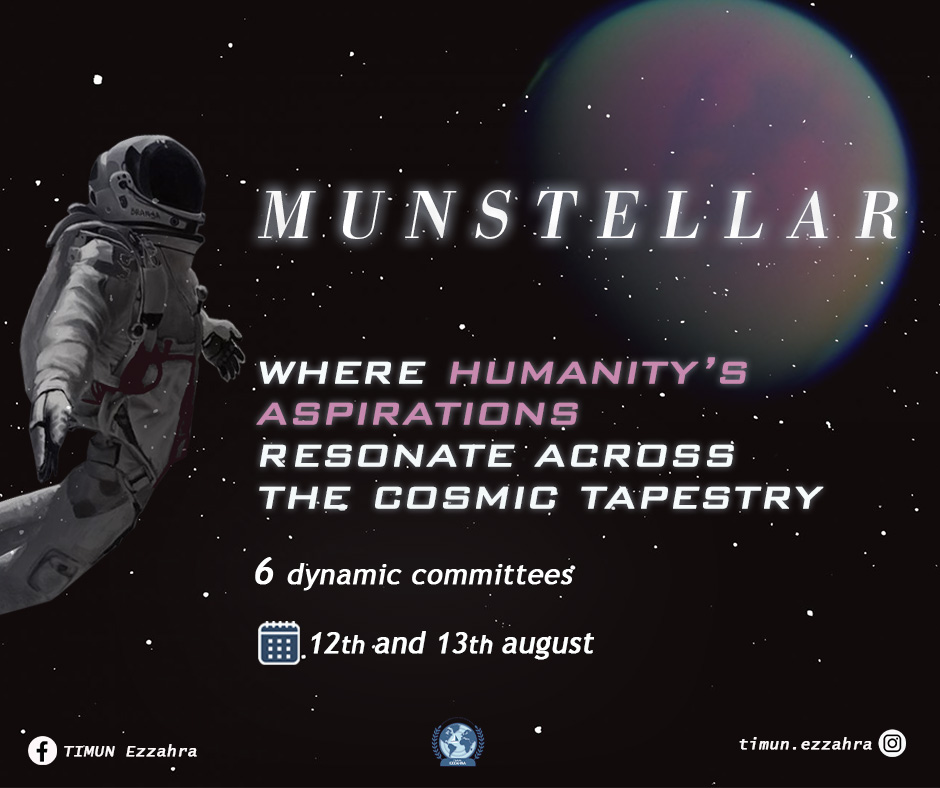After the success of our first grand simulation, we organized the second edition of our MUN grand simulation. We had the following committees : DISEC, BRICS, ICC, & historic committee.
Event LinkSupervisory Board of Lycée Pilote Hammam Lif Youth Club (LPHLYC)
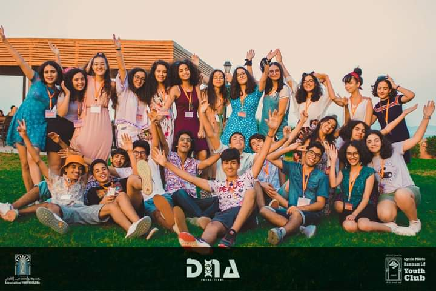Association Youth Clubs is a Tunisian association, formed by young members who who advocate for better education across their various local communities. As the supervisory board of LPHLYC, I supervised the work of the executive board and the club to ensure we are using the right strategy to reach our objectif of improving the tunisian educational system throughout social media posts, trainings, workshops and conferences.
Our Facebook Page with 4K FollowersCo-Organizer of Mind On Fleek
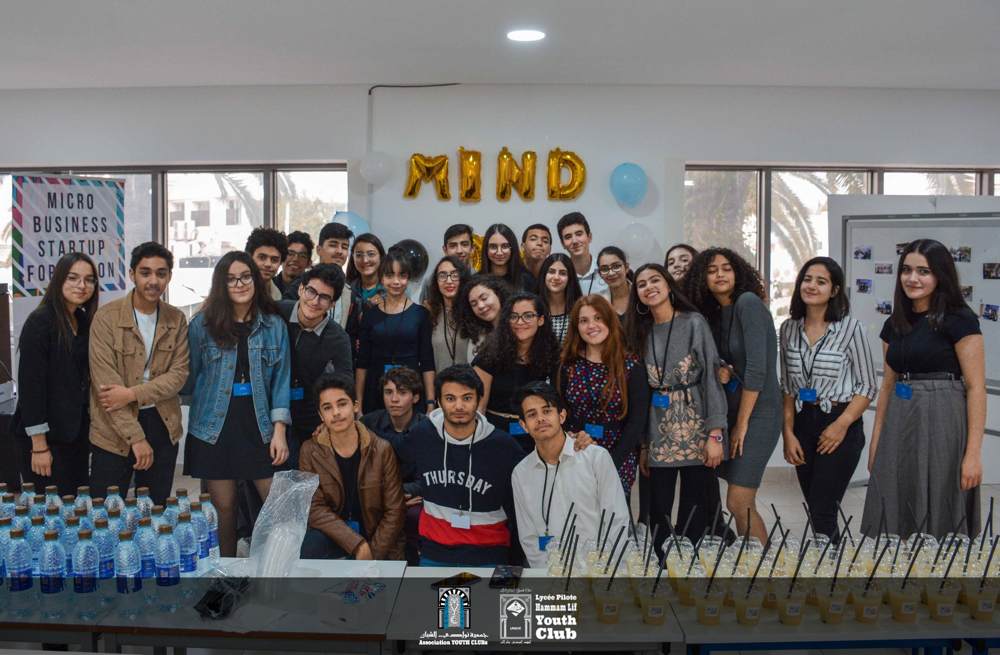Co-organized with my high school Youth Club (LPHL Youth Club) Mind On Fleek : a one-day training camp held at Avicienne Bussiness School. We organized workshops about hard skills like Graphic Design & sponsorship and other workshops about soft skills like public speaking, leadership, and time management. 90+ students attended our event.
Watch our Event After Movie on facebookSpeakers Coordinator @TEDx Pilote Ariana

Invited by Ariana Pioneer High School to join the organizing committee. Organized the Fifth edition of TEDx Pilote Ariana conference with 120+ participants. Speakers ranged from content creators to space engineers, to entrepreneurs and more.
Event Link on TEDx Offical WebsiteSAT Math Tutor @American Corner Tunis

Assisted a group of 10-15 Tunisian high school students in preparing for the Math section of the SAT in a 6 weeks cycle; Covered high school level Algebra, Geometry, Trigonometry, Calculus, and Statistics.
Ambassador @International Highway

Highway is an ed-tech startup that aims to provide access to information and guidance related to educational and extracurricular opportunities to youth. As an ambassador, I work on expanding the audience of our organization and help Tunisian students achieve their full academic potentials.
Our Official WebsiteQuantum Computing Scholar @Qubit By Qubit.

I was awarded a full scholarship by IBM Quantum to attend a
full-year introductory course about quantum computing. I
attended weekly lectures and lab sessions taught by MIT Ph.D.
Amir Karamlou graduate & Rhodes Scholar Fran Vasconcelos. The
online course includes quantum mechanics, qubits, quantum
gates & circuits, quantum algorithms & protocols, and more. I
scored on Semester 1 & Semester 2 110% delivering weekly
homework & assignments.
Class Project: Determined the
weak points in Shor code ( a quantum error correction code for
bit & phase flip error) by analyzing the graph of its average
fidelity and proposed improvement for Shor code.
Alumnus & Ambassador @Yale Young Africa Scholar

Yale Young African Scholars (YYAS) is an intensive academic and enrichment program that brings together outstanding African secondary school students planning to pursue tertiary education and who wish to make meaningful impact as young leaders on the continent.
Attended YYAS 2021 online edition : I was the 1st student in my school to attened YYAS, engaged in discussions, lectures, and seminars within the social entrepreneurship session. I also attended 2 seminars about social entrepreneurship and 3 career guidance sessions.
On December 2022, I organized an info-session in my local community to encourage high schoolers to apply to YYAS. I have also posted a blog post on YYAS official website and published a testimonial video on Youtube.
Read the blog post :Click Here
Watch my Youtube testimonial : Click Here
Scholar @Try Kibo Program

Attended a 5-week online coding camp about web foundations.Gained knowledge in HTML, CSS & JS. Developped several front-end projects on Replit.
Participant @Quantum Science Days 2023

Selected for Quantum Science Days 2023 by QWorld : a 3-day conference where I attended talks by renowned researchers/professors and discussions about published research papers and projects related to quantum computing.
Art
In my free time, I like to draw my favorite anime characters traditionally using pencils or digitally using my drawing tablet. Below some of my favorite artworks.

 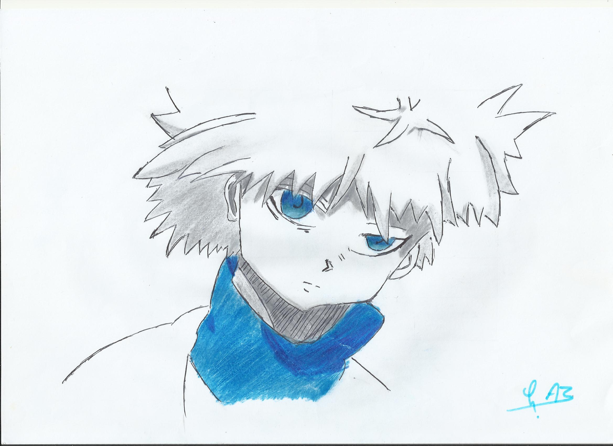
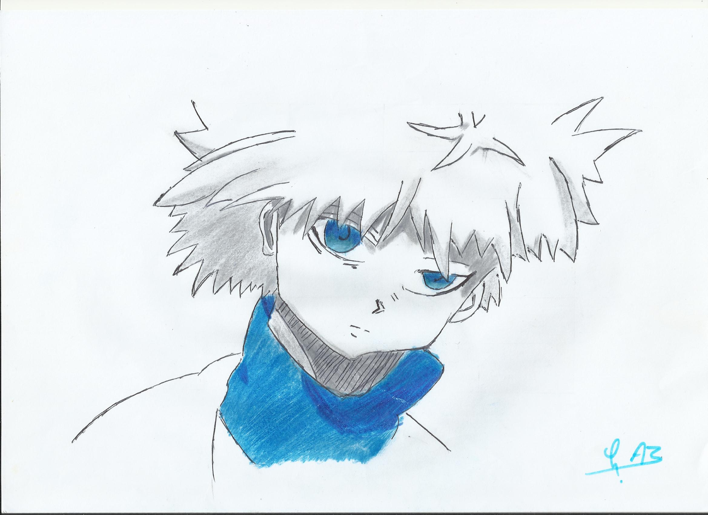
.jpg) 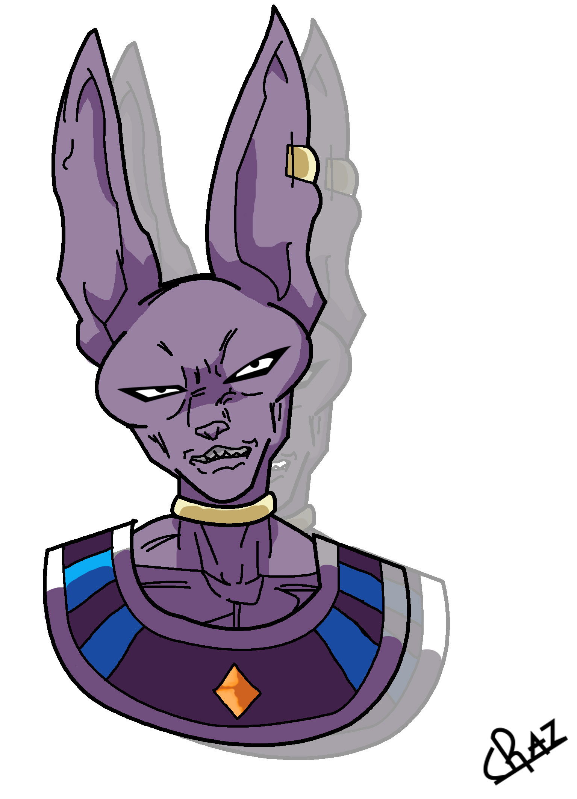
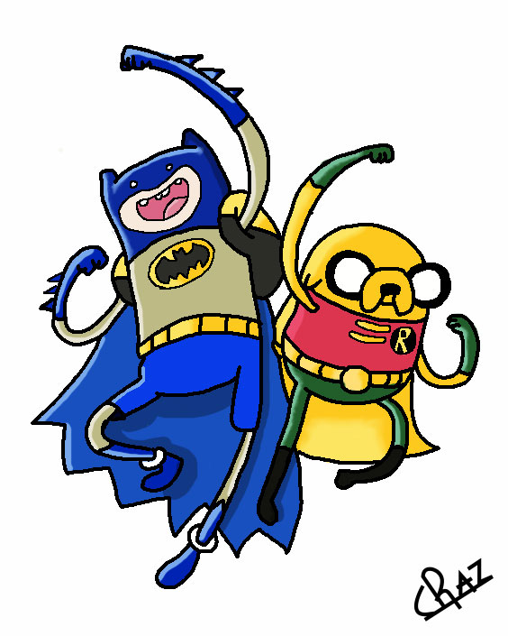
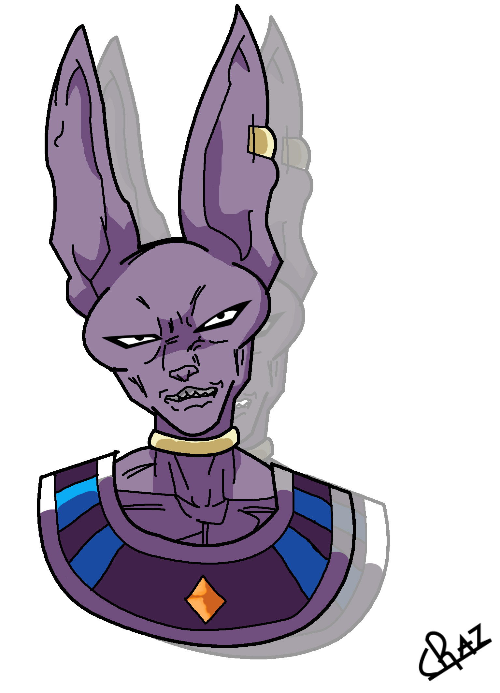
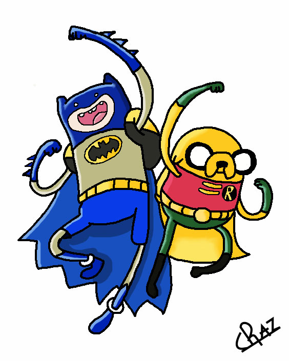
 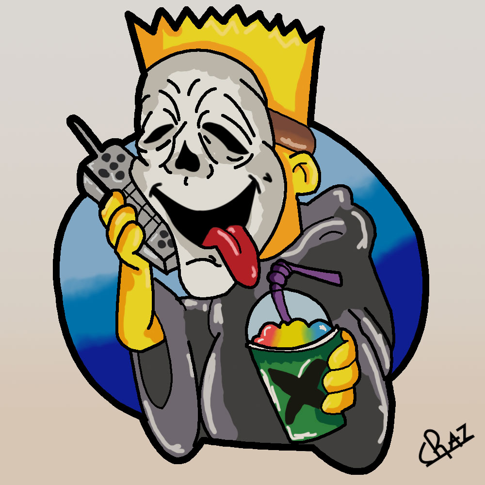
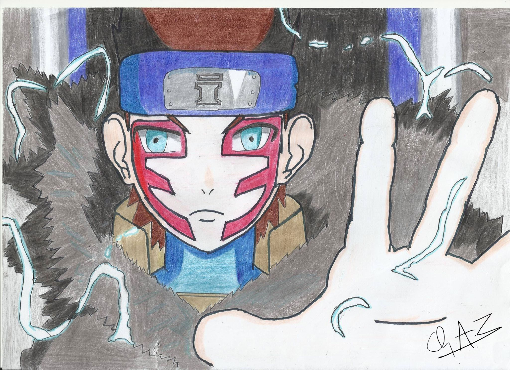
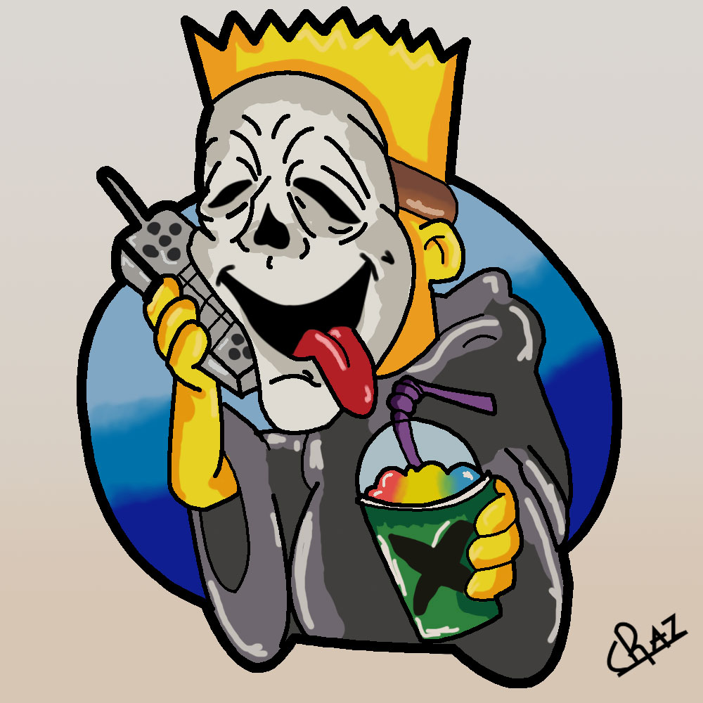
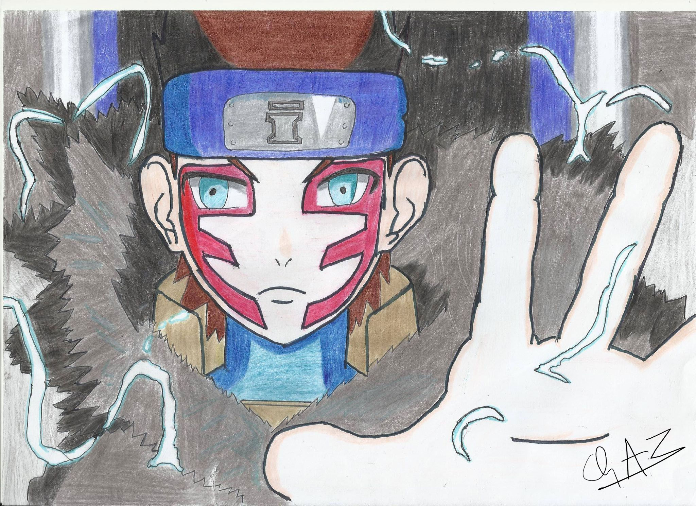
Contact Me
Email Address : chebilmohamedaziz04@gmail.com